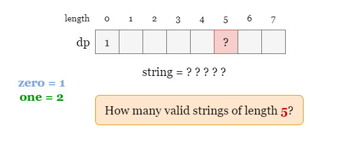

As shown in the picture, where low = 2 and high = 3, all the 5 good strings are colored in
green. Besides, three of the invalid strings are colored in red:
1 is invalid as its length is smaller than low.111 is invalid as it can't be made by multiple of 11.0011 is invalid as its length is larger than high.Here our task is to find the number of good strings, given low, high, zero and
one.
We can build an array dp to record the number of good strings with each length. Let dp[i]
be the number of good strings with length i. Set dp[0] = 1 before filling the rest of
dp as the empty string is the only good string with length 0.
Then we try to find the relation between each problem dp[i] with smaller subproblems. For example, how
do we get the number of good strings of length 5?

Note that every good string either ends with zero of 0s or one of
1s, which in our case is 0 or 11.
If a good string of length 5 ends with 0, it means that every good string of length
4 can be turned into a good string of length 5 by appending 0. Thus we
increment dp[5] by dp[4], which in the general case is dp[end] += dp[end -
zero].
Note that it is suggested to check if end >= zero before we increment dp[end], and only
apply the increase if end >= zero.
Similarly, if the string ends with 11, it means that every good string of length 3 can be
turned into a good string of length 5 by appending 11. Thus we increment
dp[5] by dp[3].
Now we have found both the base case dp[0] = 1 and the recurrence relations, it's time to fill the array
and find the number of good strings of each length in the range [low ~ high]. Here we provide an
iterative method.
Create an array dp of size 1 + high. Initialize dp[0] = 1.
Iterate over each length end:
end >= zero, increment dp[end] by dp[end - zero].end >= one, increment dp[end] by dp[end - one].Once the iteration ends, add up the numbers in dp[low ~ high].
Java
class Solution {
public int countGoodStrings(int low, int high, int zero, int one) {
// Use dp[i] to record to number of good strings of length i.
int[] dp = new int[high + 1];
dp[0] = 1;
int mod = 1_000_000_007;
// Iterate over each length `end`.
for (int end = 1; end <= high; ++end) {
// check if the current string can be made by append zero `0`s or one `1`s.
if (end >= zero) {
dp[end] += dp[end - zero];
}
if (end >= one) {
dp[end] += dp[end - one];
}
dp[end] %= mod;
}
// Add up the number of strings with each valid length [low ~ high].
int answer = 0;
for (int i = low; i <= high; ++i) {
answer += dp[i];
answer %= mod;
}
return answer;
}
}
Python3
class Solution:
def countGoodStrings(self, low: int, high: int, zero: int, one: int) -> int:
# Use dp[i] to record to number of good strings of length i.
dp = [1] + [0] * (high)
mod = 10 ** 9 + 7
# Iterate over each length `end`.
for end in range(1, high + 1):
# check if the current string can be made by append zero `0`s or one `1`s.
if end >= zero:
dp[end] += dp[end - zero]
if end >= one:
dp[end] += dp[end - one]
dp[end] %= mod
# Add up the number of strings with each valid length [low ~ high].
return sum(dp[low : high + 1]) % mod
Time complexity: O(high)O(\text{high})
dp iteratively, each step includes at most two summation steps which
takes constant time.
Space complexity: O(high)O(\text{high})
dp of length high + 1.We will implement the same algorithm in approach 1 using a recursive method. Let dfs(end) be the number
of good strings of length end.
The trick is as described before, each time a recursive function calls itself, it reduces the given problem dfs(end)
into subproblems dfs(end - zero) and dfs(end - one). The recursion call continues until it
reaches a point where the subproblem can be solved without further recursion, that is dfs(0) = 1.
Similarly, we will also build an auxiliary array dp to avoid repeated computation. Initially, we set
every value dp[i] (except dp[0]) as -1, which also implies that
dp[i] is not visited. During the recursion, if dp[end] != -1, it means we have already
calculated dfs(end) previously, so just return dp[end].
Create an array dp of size 1 + high. Initialize dp[0] = 1 and the
value of all the rest cells as -1.
Define a recursive function dfs(end), if dp[end] != -1, return dp[end],
otherwise:
answer = 0.end >= zero, increment answer by dfs(end - zero).end >= one, increment answer by dfs(end - one).dp[end] as answer.Once the iteration ends, add up the numbers in dp[low ~ high].
Java
class Solution {
// Use dp[i] to record to number of good strings of length i.
int[] dp;
int mod = 1_000_000_007;
// Find the number of good strings of length `end`.
private int dfs(int end, int zero, int one) {
if (dp[end] != -1)
return dp[end];
int count = 0;
if (end >= one) {
count += dfs(end - one, zero, one);
}
if (end >= zero) {
count += dfs(end - zero, zero, one);
}
dp[end] = count % mod;
return dp[end];
}
public int countGoodStrings(int low, int high, int zero, int one) {
dp = new int[high + 1];
Arrays.fill(dp, -1);
dp[0] = 1;
// Add up the number of strings with each valid length [low ~ high].
int answer = 0;
for (int end = low; end <= high; ++end) {
answer += dfs(end, zero, one);
answer %= mod;
}
return answer;
}
}
Python3
class Solution:
def countGoodStrings(self, low: int, high: int, zero: int, one: int) -> int:
# Use dp[i] to record to number of good strings of length i.
dp = [1] + [-1] * (high)
mod = 10 ** 9 + 7
# Find the number of good strings of length `end`.
def dfs(end):
if dp[end] != -1:
return dp[end]
count = 0
if end >= zero:
count += dfs(end - zero)
if end >= one:
count += dfs(end - one)
dp[end] = count % mod
return dp[end]
# Add up the number of strings with each valid length [low ~ high].
return sum(dfs(end) for end in range(low, high + 1)) % mod
Time complexity: O(high)O(\text{high})
Similarly, it takes O(high)O(\text{high}) time to fill dp recursively.
Space complexity: O(high)O(\text{high})
dp of length high + 1 which takes O(high)O(\text{high}) space.